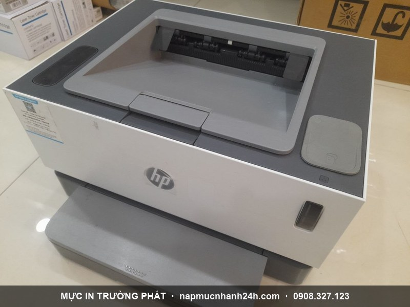
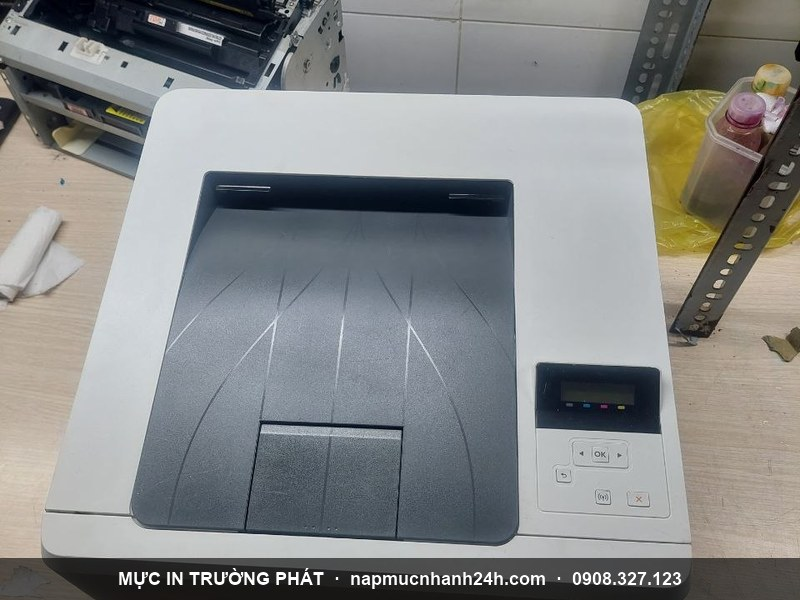

Nạp mực máy in tận nơi Bình Chánh - uy tín, nhanh, chỉ từ 90.000đ
Mực In Trường Phát nhận nạp mực máy in tận nơi tại Bình Chánh cho hộ gia đình, văn phòng, kho xưởng và doanh nghiệp trong các khu công nghiệp. Kỹ thuật viên tới tận nơi, đổ mực ngay tại chỗ, in test trước khi tính tiền, bảo hành 1 tháng. Hỗ trợ 24/7 kể cả thứ 7, chủ nhật và lễ.
Hotline gọi ngay: 0908.327.123 · 0819.007.394 (Zalo cả 2 số)
Phục vụ khắp Bình Chánh

Trường Phát phục vụ toàn bộ địa bàn Bình Chánh, gồm các xã mới sau sáp nhập: Vĩnh Lộc, Tân Vĩnh Lộc, Bình Lợi, Tân Nhựt, Bình Chánh, Hưng Long, Bình Hưng - phủ các khu dân cư dọc Quốc lộ 1A, Nguyễn Văn Linh, Trần Đại Nghĩa, khu KCN Vĩnh Lộc, Lê Minh Xuân và các khu căn hộ khu Nam.
Nhận nạp mực mọi hãng: HP, Canon, Brother, Epson, Samsung, Xerox, Ricoh - máy in laser đen trắng, laser màu, máy in phun và máy in kim.
Dấu hiệu máy in cần nạp mực
- Máy báo "no toner", "toner low" hoặc đèn đỏ, không cho in.
- Bản in mờ cả trang, mờ dần đều, mờ theo vệt dọc.
- In không ra chữ, in ra giấy trắng.
- Kẹt giấy ngay đoạn hộp mực, máy kêu "cục cục" rồi dừng.
- Nhấc hộp mực thấy nhẹ, lắc thì in được một lúc rồi mờ lại.
Bảng giá nạp mực máy in Bình Chánh
| Loại máy | Giá tận nơi |
|---|---|
| Laser đen trắng phổ thông (HP, Canon thông dụng) | 90.000đ |
| Laser đen trắng cao cấp (Samsung, Xerox, Brother, Ricoh) | 120.000 - 180.000đ |
| Laser màu (HP, Canon, Brother, Oki) | 250.000 - 450.000đ / màu |
| Máy in phun (Canon, Epson, HP, Brother) | 40.000 - 80.000đ / màu |
| Mực kim (Ruy băng) Epson LQ 300/310/2170/2180 | 120.000đ |
Giá gồm công thợ + mực chính hãng + di chuyển. Khu vực xa trung tâm Bình Chánh có thể phụ phí di chuyển nhỏ - báo trước khi đi. Xem bảng giá đầy đủ.
Nạp mực các dòng máy in phổ biến tại Bình Chánh
Khu Bình Chánh nhiều hộ kinh doanh, kho xưởng và văn phòng KCN - các dòng máy Trường Phát nạp nhiều nhất:
| Dòng máy in | Mã hộp mực | Giá nạp |
|---|---|---|
| Canon LBP 2900, 3000 | Cartridge 303 / 12A | 90.000đ |
| HP LaserJet 1010, 1018, 1020, 1022 | 12A (Q2612A) | 90.000đ |
| HP LaserJet P1102, P1102w, M1132, M1212 | 85A (CE285A) | 90.000đ |
| HP LaserJet P2035, P2055, Pro 400 M401 | 05A / 80A | 90.000đ |
| HP LaserJet Pro M12, M15, M17 | CF279A / W1500A | 90.000 - 120.000đ |
| Canon imageCLASS MF3010, LBP6030, LBP6230 | 325 / 337 | 90.000đ |
| Brother HL-2130, 2321D, DCP-7060, MFC-7360 | TN-2130 / TN-2280 | 140.000đ |
| Samsung ML-1610, 2010, SCX-4300, M2020 | MLT-D104 / D111 | 120.000đ |
| Epson L310, L360, L805, L1300 (máy in phun) | mực nước / mực dầu | 60.000 - 80.000đ/màu |
Máy in xưởng/văn phòng số lượng nhiều? Gọi 0908.327.123 để báo giá theo gói + lịch bảo trì định kỳ.
Sửa máy in tận nơi tại Bình Chánh
Không chỉ nạp mực, Trường Phát sửa chữa máy in tận nơi tại Bình Chánh: kẹt giấy, in mờ/sọc, không nhận lệnh in, lỗi đèn báo, thay drum, bao lụa, trục từ, rotor, lò sấy. Báo giá trước khi sửa, bảo hành 1 tháng. Chi tiết: dịch vụ sửa máy in tận nơi TP.HCM.
Bơm thay mực, bán hộp mực & thu mua máy in cũ tại Bình Chánh
- Bơm / thay mực: đổ mực mới hoặc thay hộp mực zin/tương thích, reset chip — làm tại chỗ.
- Bán hộp mực chính hãng + linh kiện: hộp mực mới, drum, gạt, trục từ, chip cho HP, Canon, Brother, Samsung. Có hóa đơn VAT cho doanh nghiệp, kho xưởng. Xem bảng giá mực & linh kiện.
- Thu mua & bán máy in cũ: thu mua máy in cũ giá cao, bán máy đã in test (Canon 2900, HP P2035, Brother HL-2130...). Đổi máy cũ lấy máy mới, đổi máy hư lấy máy lành.
Phục vụ tận các xã Vĩnh Lộc, Tân Vĩnh Lộc, Bình Lợi, Tân Nhựt, Bình Chánh, Hưng Long, Bình Hưng. Gọi 0908.327.123 báo nhu cầu (nạp mực / sửa / mua bán / thu máy).
Quy trình nạp mực tận nơi tại Bình Chánh
- Tiếp nhận yêu cầu qua hotline/Zalo, xác nhận lịch + địa chỉ.
- Kỹ thuật có mặt, kiểm tra máy + hộp mực, báo tình trạng.
- Báo giá trước, chỉ làm khi khách đồng ý.
- Tháo, vệ sinh, đổ mực mới đúng dòng, reset chip nếu cần.
- In test 3-5 trang - chỉ thu tiền khi khách hài lòng.
Máy lỗi nặng? Xem dịch vụ sửa máy in tận nơi.
Khu vực lân cận
Trường Phát phục vụ cả các khu giáp ranh Bình Chánh: Quận 8, Bình Tân và Quận 7.

Liên hệ nạp mực Bình Chánh
- Hotline 1: 0908.327.123 (Zalo · Telegram)
- Hotline 2: 0819.007.394 (Zalo · Telegram)
- Hoạt động: 24/7, kể cả lễ tết · Phục vụ: toàn Bình Chánh + lân cận